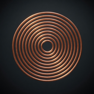
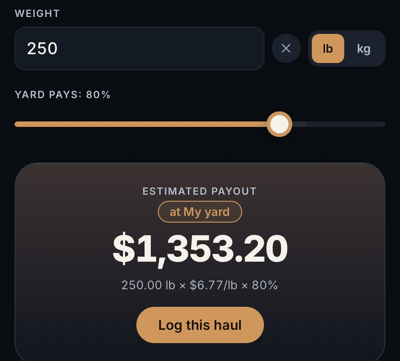

Before you haul your copper in, check today's price.
Check today's copper price, see what scrap yards typically pay, and punch in your weight to estimate what your load should bring at your yard. Built for scrappers, peddlers and small haulers.
Download free on the App StoreFree for iPhone · optional Pro upgrade

Example estimate: 250 lb of copper at a yard paying 80% of the market price (price per lb shown rounded to the cent).
How it works
- Check today's priceCopper, brass, aluminum, steel and more, per pound. Metals without a live market feed are marked as estimates.
- See what yards typically payYards pay a cut of the market price — for copper, commonly 55–85% depending on grade and region.
- Estimate your loadEnter your weight and your yard's rate to see roughly what the load should bring.
Also in the app
- Save your own yard's rates
- Price alerts when copper crosses a price you set (3 free)
- Log your hauls and see what you've sold (10 entries free, unlimited with Pro)
Scrap Metal Intel is a price-lookup and haul-log app for people selling scrap to a local yard. It doesn't buy or sell metal or handle any money. Calculator results are estimates: prices shown are reference market prices (a few metals without a live feed show an estimate), and your yard sets what it pays based on grade, weight and condition.
© 2026 Andromeda Kinship LLC · Fall River, MA · support@andromedakinship.com
Scrap Metal Intel is published by Andromeda Kinship LLC and listed on the App Store under developer Michael Dube.
Privacy Policy · Terms of Use · Andromeda Kinship
App Store is a trademark of Apple Inc., registered in the U.S. and other countries.